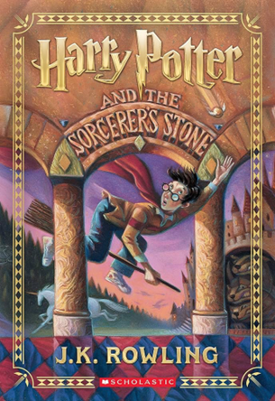
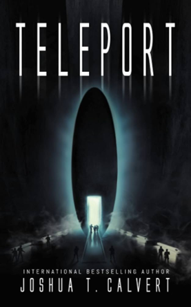
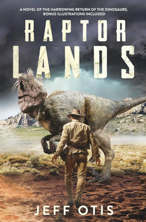

Description
Harry Potter has never been the star of a Quidditch team, scoring points while riding a broom far above the ground. He knows no spells, has never helped to hatch a dragon, and has never worn a cloak of invisibility. All he knows is a miserable life with the Dursleys, his horrible aunt and uncle, and their abominable son, Dudley - a great big swollen spoiled bully. Harry's room is a tiny closet at the foot of the stairs, and he hasn't had a birthday party in eleven years. But all that is about to change when a mysterious letter arrives by owl messenger: a letter with an invitation to an incredible place that Harry - and anyone who reads about him - will find unforgettable.
ORDER NOW
Description
In Lake Maracaibo, in the northwestern part of Venezuela, a long-hidden extraterrestrial artifact underneath the ocean floor triggers a disaster. The U.S. military launches an expedition, sending a cutting-edge team of international researchers to the source of a magnetic instability that’s destroying any electronics in the region. Inside the large artifact is a chamber that’s large enough for the researchers to enter. After a shocking death, the scientists from the US, Europe and Russia realize that it is a teleportation device. But they soon face a fundamental question: Why do those who enter the chamber fall into a coma? Are they traveling to other places, or is it all just an illusion? Dream or reality, the other side of the teleporter turns out to be a hell that puts not only the team, but the entire project to the test - because they are not alone out there.
ORDER NOW
Description
A paleontologist, a geneticist, and a quantum computer genius reverse engineer dinosaurs from birds, planning to learn how dinosaurs behaved millions of years ago. A ruthless oligarch arranges for changes in the bird genes that result in large and dangerous predators - the kind his wealthy clients can show off. By the middle of the twenty-first century, brilliant robots called Dexters become important to the operations of the large ranch where the dinosaurs are kept. This is the story of scientists' desire for knowledge versus greedy profiteers. Of humans versus the deadliest of predators. Of families versus an increasing menace, both human and nonhuman. Of how an underdog becomes a key player in this life-or-death struggle.
ORDER NOW